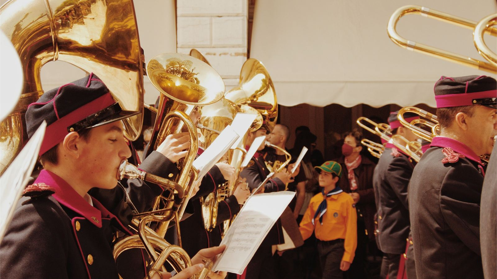
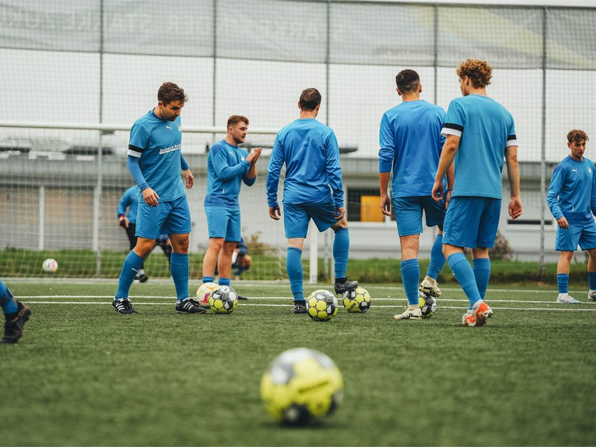
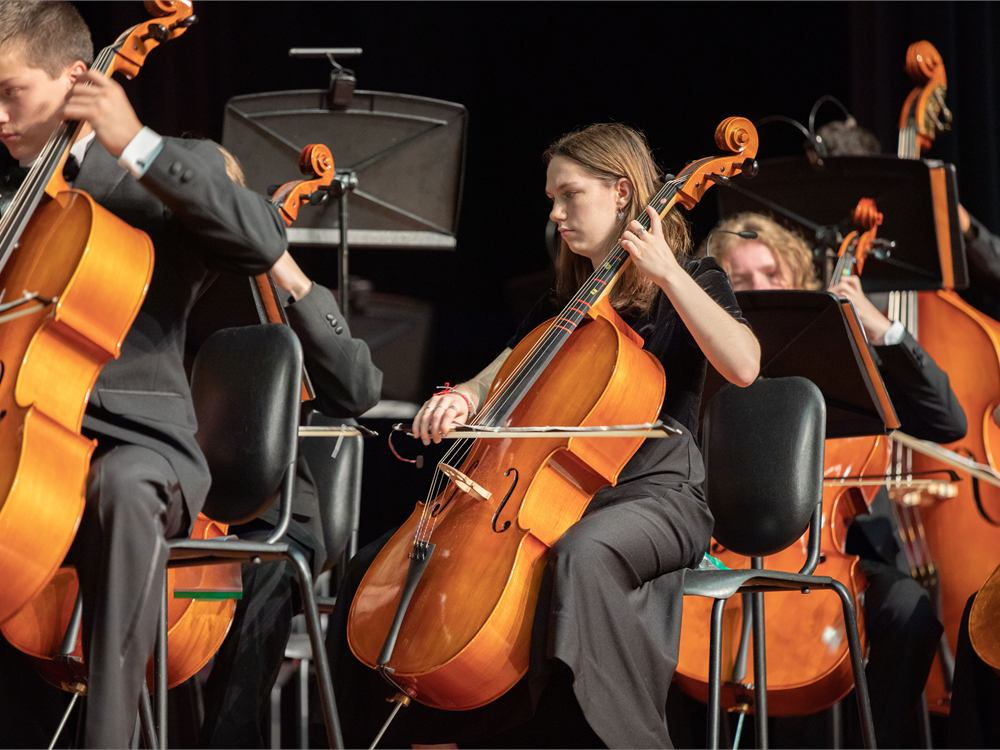
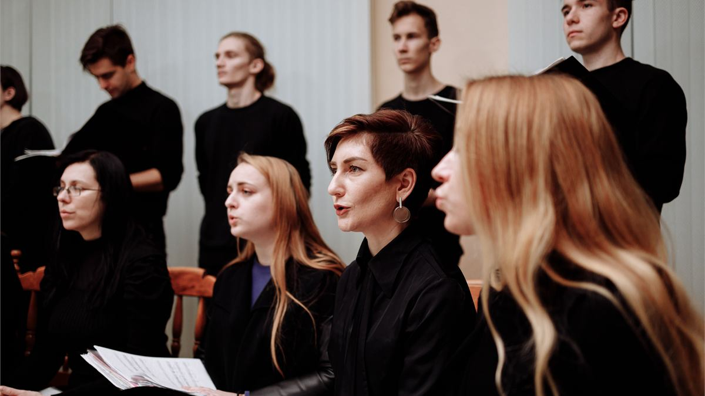

Elke vijf jaar iets blijvends voor de club.
Elke vijf jaar viert een vereniging haar lustrum. LustrumMoment helpt sport- en muziekverenigingen om dat moment te benutten voor één betekenisvolle investering — met een tijdelijke steunstichting SBBI, zorgvuldig begeleid van begin tot eind.

Wat we doen
Zo’n moment wil je benutten. Een lustrum is een natuurlijke gelegenheid om de club iets te geven dat de jaren daarna meegaat. Daar bestaat een fiscaal erkend instrument voor — de steunstichting SBBI — maar het is technisch, tijdgebonden en foutgevoelig.
Wij maken het bruikbaar voor een gewoon bestuur. Van de eerste vraag “kan het bij ons?” tot de oprichting, de werving, de verantwoording en een nette afronding. Eén investering, één traject, één aanspreekpunt.
Voor wie
Voor besturen en voorzitters van sport- en muziekverenigingen die van hun lustrum meer willen maken dan een feest.

Sportverenigingen

Muziekverenigingen
De regeling is smal. Ze geldt alleen voor sport- en muziekverenigingen die lid zijn van een landelijke, representatieve koepel. Lees voor wie de regeling geldt.
Waar we voor staan
Zorgvuldig, transparant en daadkrachtig — en eerlijk over wat wel en niet kan. Geen loze beloftes, geen gedoe voor het bestuur.
Een voorbeeld uit de praktijk
Honderden kleine giften, samen een groot bedrag.
Een sportvereniging vierde niet lang geleden een groot jubileum. Rond die mijlpaal richtte ze een tijdelijke steunstichting op om geld in te zamelen voor één grote investering.

Verder lezen
Wat is een steunstichting SBBI?
Een tijdelijke stichting die een sport- of muziekvereniging opricht rond haar lustrum, met één doel: geld inzamelen voor één bijzondere investering of uitgave.
Pakketten en stappen
Reken op een boog van drie jaar rond het lustrum: het jaar ervoor voorbereiden en oprichten, het lustrumjaar werven en realiseren, het jaar erna verantwoorden en afronden.
Over LustrumMoment
Ik ben Mathieu Rensen. Ik woon in Lochem, en mensen helpen is de rode draad in mijn leven.
Veelgestelde vragen
Komen wij in aanmerking? Is het veilig en legaal? Blijft het geld van de club? Wat kost het?
Kennismaking
Een kennismaking is vrijblijvend en kosteloos. We kijken samen of een steunstichting rond jullie lustrum haalbaar is, en wat er nodig zou zijn.